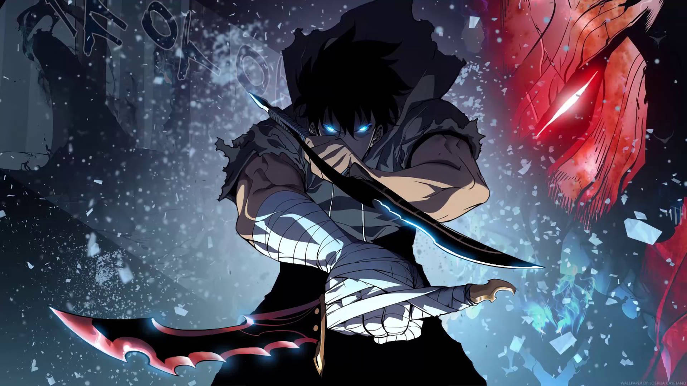

Solo Leveling
Solo Leveling es una serie de anime de fantasía y drama coreano que se estrenó en enero de 2024. La historia se centra en Sung Jin-woo, un cazador que despierta en el hospital tras una brutal experiencia en una mazmorra. Jin-woo descubre que tiene la capacidad de ver una pantalla de videojuego y que puede subir de nivel su cuerpo y habilidades al completar las misiones diarias.

lista de animes
animes que la gente ama:
- one piece
- jujutsu kaisen
dragon ball z
animes que la gente odia:
- attack on titan
- naruto
- death note
cuando se origino el anime?
Aparece por primera vez en Japón a principios del siglo XX como forma de hacer frente al gigante Disney.
que es el anime?
Estos dibujos animados a modo de caricaturas japonesas son la representación en la gran pantalla de muchas de las famosas historias que podemos leer en los mangas.